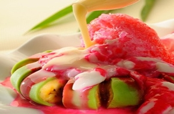

< < Daftar resep
bahan |
cara memasak
Es Pisang Ijo

Pisang ijo atau es pisang ijo adalah sejenis makanan khas di Sulawesi Selatan,
terutama di kota Makassar. Makanan ini terbuat dari bahan utama pisang yang dibalut
dengan adonan tepung berwarna hijau. Cara memasaknya dengan mengukus di dandang.
Adonan tersebut dibuat dari tepung, air, dan pewarna hijau yang terbuat dari
campuran air dengan daun suji atau pandan
Bahan-bahan:
- 5 buah pisang raja yang cukup tua
- 40 gram tepung beras
- 1/2 sendok teh garam
- 100 ml air daun suji
- 3 tetes pewarna hijau
- 300 ml air bersih
- Es Serut Secukupnya
- Sirup DHT secukupnya
- Gula pasir secukupnya
- 50 gram tepung terigu
- 650 ml santan
- 1 lembar daun pandan
- 1/4 sendok teh garam
Cara Memasak:
- Campurkan tepung beras, garam, air bersih, air daun suji, juga pewarna hijau lalu rebus sambil diaduk sampai mendidih, angkat.
- Tambahkan tepung beras, aduk sampai merata
- Tipiskan adonan, balutkan pada pisang hingga tertutup.
- Kukus pisang selama 20 menit. Angkat dan sisihkan.
- Campurkan semua bahan saus lalu rebus sampai mendidih, angkat lalu dinginkan.selesai.
kembali keatas
< < Daftar resep